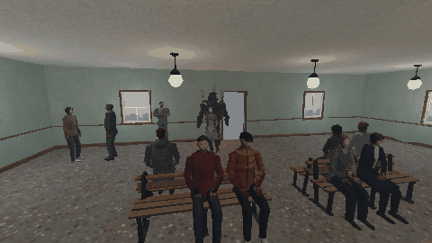

Tutorials › Make a Crowd Flee from a Monster
How to Make a Crowd Flee from a Monster in Godot 4
People who see a monster close by run, the ones further off back away, and the panic spreads from runner to runner.

A monster walks into a crowded room, and nobody moves: the cheapest way to break a horror scene. One script under the monster tells the people who can see it close by to run, the ones further off to start or step back, and lets the panic spread from whoever runs to the people beside them, a moment later. It calls four methods on each person (flee, back_away, startle, calm).
Script: crowd_flee.gd (MIT) · Godot 4.3 or newer · its folder on GitHub
How to use it
- Add a
Nodeunder whatever moves as the monster (aNode3D: the script only needs where it is) and attachcrowd_flee.gd. - Set
flee_radius(inside it people run),notice_radius(inside it they start or back away),spread_radius(how far the panic jumps from a runner, after a short random delay) andcooldown(one reaction of a kind per person per cooldown). - Give your people
flee,back_away,startleandcalm. Setneed_sightoff for a monster that is heard before it is seen.
What it needs
- Godot 4.3 or newer (the Compatibility renderer is enough).
- People with four methods: flee, back_away, startle and calm.
Try it free
The PSX Bystanders NPC Pack Free Sampler has the office worker and the young man with the pack's NPC layer, which has the four methods: the code works on them as they are.
How it was tested
In Godot 4.3 and 4.7.2, with the free sampler's two people round a stand-in monster, one of them behind a wall: the two near ones run, the one next to a runner runs a moment after it, the one further off backs away, the one behind the wall and the one far off stay calm, no one reacts the same way twice, and once the monster has gone the people who ran stand again.
The code
extends Node
## How to Make a Crowd Flee from a Monster in Godot 4
## Cordatix Godot 4 PSX tutorials, MIT licensed: https://github.com/GoldenSparrow-Dev/cordatix-godot-psx-tutorials
## Written for: https://cordatix.itch.io/psx-bystanders-npc-pack
## Put it under the monster (any Node3D that moves, or set `monster`). The people who can see it within `flee_radius`
## run; those within `notice_radius` start or back away; and whoever runs spreads the panic to the people near them, a
## moment later, whether those can see the monster or not. Once the monster is gone, the people who ran calm down.
## It works with PSX Bystanders' people (CordatixBystander: flee, back_away, startle, calm) and with any NPC in `group`
## that has those methods. Godot 4.3 or newer.
signal panicked(person: Node3D, how: String)
@export var monster: Node3D
@export var flee_radius := 6.0
@export var notice_radius := 10.0
## Whether a wall between the monster and a person keeps that person calm (the panic can still reach them).
@export var need_sight := true
## Metres around a person who runs that the panic reaches, and how long it takes (at least, at most).
@export var spread_radius := 3.0
@export var spread_delay := Vector2(0.3, 0.9)
## Seconds before the same person reacts the same way again (a start can still turn into a run), and how long the
## monster must be out of `notice_radius` before the people who ran calm down.
@export var cooldown := 8.0
@export var calm_after := 6.0
@export var group := "cordatix_bystander"
var _clock := 0.0
var _last := {} # person -> [when it last reacted, 1 if it ran, else 0]
var _ran: Array = [] # the people who ran, to calm down later
var _pending: Array = [] # [when, person]: the panic on its way
var _gone := 0.0
func _ready() -> void:
if monster == null:
monster = get_parent() as Node3D
func _physics_process(delta: float) -> void:
_clock += delta
var at := monster.global_position
for p in _pending.duplicate():
if p[0] <= _clock:
_pending.erase(p)
_react(p[1], "flee", at)
var near := false
for person in get_tree().get_nodes_in_group(group):
var d: float = person.global_position.distance_to(at)
if d > notice_radius:
continue
near = true
var how := "flee" if d <= flee_radius else "back_away"
if not _cooled(person, how) or (need_sight and not _sees(person)):
continue
_react(person, how, at)
_gone = 0.0 if near else _gone + delta
if _gone >= calm_after:
for person in _ran:
if is_instance_valid(person) and person.has_method("calm"):
person.calm()
_ran.clear()
func _cooled(person: Node3D, how: String) -> bool:
## Whether `person` may react `how` now: not within cooldown of a reaction as strong (a run is stronger).
var last: Array = _last.get(person, [-INF, -1])
return _clock - last[0] >= cooldown or int(how == "flee") > last[1]
func _react(person: Node3D, how: String, from: Vector3) -> void:
if not _cooled(person, how):
return
_last[person] = [_clock, int(how == "flee")]
if how == "back_away" and not person.has_method("back_away"):
how = "startle"
person.call(how, from)
panicked.emit(person, how)
if how != "flee":
return
_ran.append(person)
# the people around one who runs run too, a moment later
for other in get_tree().get_nodes_in_group(group):
if other != person and other.global_position.distance_to(person.global_position) <= spread_radius \
and _cooled(other, "flee"):
_pending.append([_clock + randf_range(spread_delay.x, spread_delay.y), other])
func _sees(person: Node3D) -> bool:
## A ray from the monster's eyes to the person's: nothing but the two of them in its way.
var eye := monster.global_position + Vector3.UP * 1.5
var q := PhysicsRayQueryParameters3D.create(eye, person.global_position + Vector3.UP * 1.5)
var skip: Array[RID] = []
for n in [monster, person]:
if n is CollisionObject3D:
skip.append(n.get_rid())
q.exclude = skip
return monster.get_world_3d().direct_space_state.intersect_ray(q).is_empty()
The devlog and the pack
The step-by-step walkthrough comes as a devlog on itch.io on 16 November 2026; this page is the tutorial until then. It is written for PSX Bystanders NPC Pack, a PS1-style asset pack by Cordatix for Godot 4, Unity, Unreal and Blender.